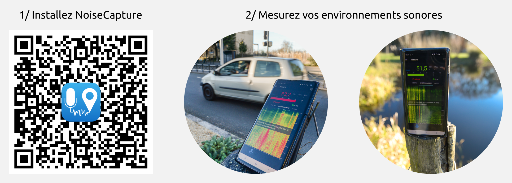
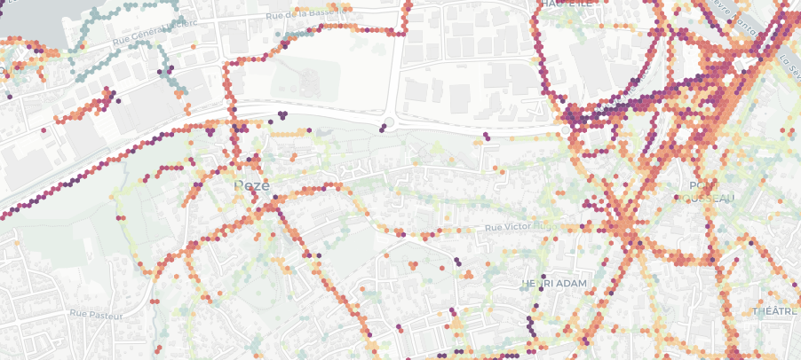

Qui est concerné ?
Si vous habitez ou vous travaillez à Rezé vous pouvez participer à ce projet. L'objectif est de disposer de participants connaissant un minimum le territoire Rezéen et y passant assez souvent pour pouvoir contribuer.
Suis-je engagé ?
La participation est totalement libre et non contraignante. Vous pouvez vous investir en fonction de vos envies et vos disponibilités.
Comment participer ?
Pour participer, nous vous proposons deux moyens d'actions : la mesure et la participation à des groupes de discussions. Ces deux points peuvent être cumulés ou pas; et vous pouvez modifier votre implication à l'un ou l'autre tout le long du projet.
Mesurer
Réaliser des mesures des environnements sonores
NoiseCapture
Pour mesurer votre environnement sonore (le bruit ambiant, les oiseaux, le vent dans les arbres, ...), nous vous proposons d'utiliser l'application NoiseCapture, développée par l'UMRAE membre du projet.
En quelques mots, cette application :
- ne fonctionne que sur les smartphones Android*,
- est gratuite, sans publicités et ne collecte aucune information sensible sur votre smartphone,
- ne nécéssite aucune inscription préalable (pas de compte avec un identifiant / mot de passe),
- n'enregistre pas l'audio (le bruit, les discussions, ...). Seuls des indicateurs acoustiques sont collectés. Ces indicateurs ne permettent pas de reconnaître une personne ou de reconstruire une discussion.
* vous avez un Iphone ? Nous avons prévu de pouvoir vous prêter des smartphones Android, déjà équipés de NoiseCapture. Contactez-nous pour en savoir plus.
Comment ça marche ?
Pour savoir comment installer l'application et réaliser une mesure, vous pouvez consulter cette page explicative.

À la 3ème étape, concernant la description de la mesure, notez que l'interface est divisée en 3 parties :
- A/ informations strictement personnelles et donc non transmises à la communauté,
- B/ code dédié aux NoiseCapture Party : ne pas renseigner dans le cadre du projet SonoRezé,
- C/ partie dédiée à la description que vous êtes invité à renseigner (même si cela reste optionnel)
Une fois la mesure réalisée et décrite, les données sont automatiquement transmises sur notre serveur. À partir de là, les informations sont contrôlées et mises en forme pour alimenter une base de données communautaire et mondiale. Ces données sont directement visibles sur cette carte interactive.

Que dois-je mesurer, où et quand ?
Quoi ?
SonoRezé s'intéresse aux environnements sonores (aussi appelés "paysages sonores") de la ville.
Ces environnements sont composés de sons agréables ou désagréables, forts ou faibles, aigus ou graves, ...
Dès lors, lorsque vous réalisez des mesures à l'aide de NoiseCapture ne vous limitez pas aux sources de nuisance.
Si vous jugez qu'un évènement sonore mérite d'être mesuré, n'hésitez pas.
Où et quand ?
Par ailleurs, l'objectif est de disposer d'une cartographie la plus représentative possible. Pour cela, nous devons agir sur deux paramètres :
- la couverture spatiale : afin de couvrir la plus grande zone possible, nous vous conseillons de réaliser des mesures en vous déplaçant.
- la couverture temporelle : nous vous conseillons de réaliser des mesures à différentes périodes de la journée, mais aussi de la semaine (ex: le bruit des voitures peut être présent aux heures de pointes et absent le reste de la journée / une nuisance peut exister les jours ouvrés et être absente le week-end).
En mixant ces deux paramètres, il vous est possible de réaliser des mesures au même endroit mais à différents moments. Cela permettra d'avoir une meilleure vue sur le contexte acoustique du lieu en question.
Discuter
Participer à des groupes de discussion
Echanger pour appréhender et agir sur "la signature sonore" de Rezé
À travers des temps d'échanges programmés, les participants seront invités à venir faire part de leur expérience sonore du territoire Rezéen.
Ces moments conviviaux sont également le moyen de collecter les attentes des citoyens et de les partager avec les équipes de la ville, membre du projet.
Lors de la première session du projet SonoRezé (2021-22), ces groupes de discussion on permis de faire émerger de nombreuses pistes intéressantes, qui sont résumées sur cette page.
Dans le cadre du second volet, il est prévu d’aller plus loin, en définissant collectivement des actions à mener pour agir sur l’amélioration des environnements sonores de la ville.